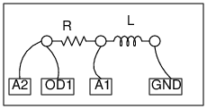

Schematic

Instructions
- Make connections as shown in the figure.
- Pressing "0 to 5V STEP" or "5 to 0V STEP" switches OD1
and captures the resulting voltage variation at A1
- "Calculate R/L" fits the data with V = Vo exp(-tR/L)
- Repeat with different R and L values.
Note that the 5 -> 0 volt step results in a negative voltage
across the inductor, due to the back EMF.